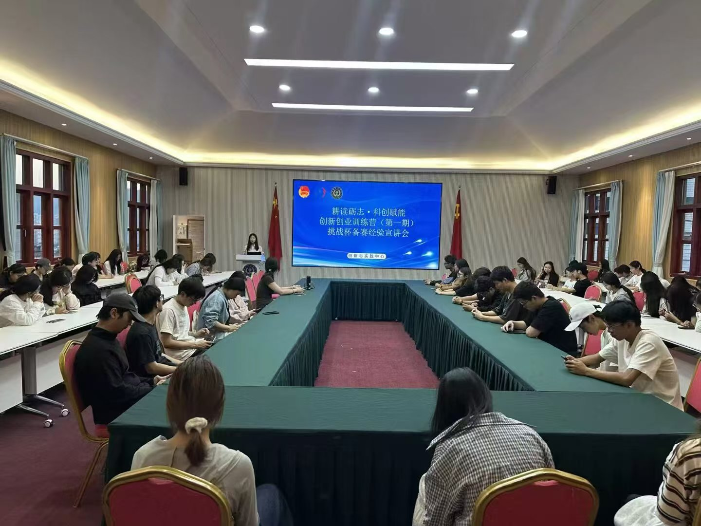
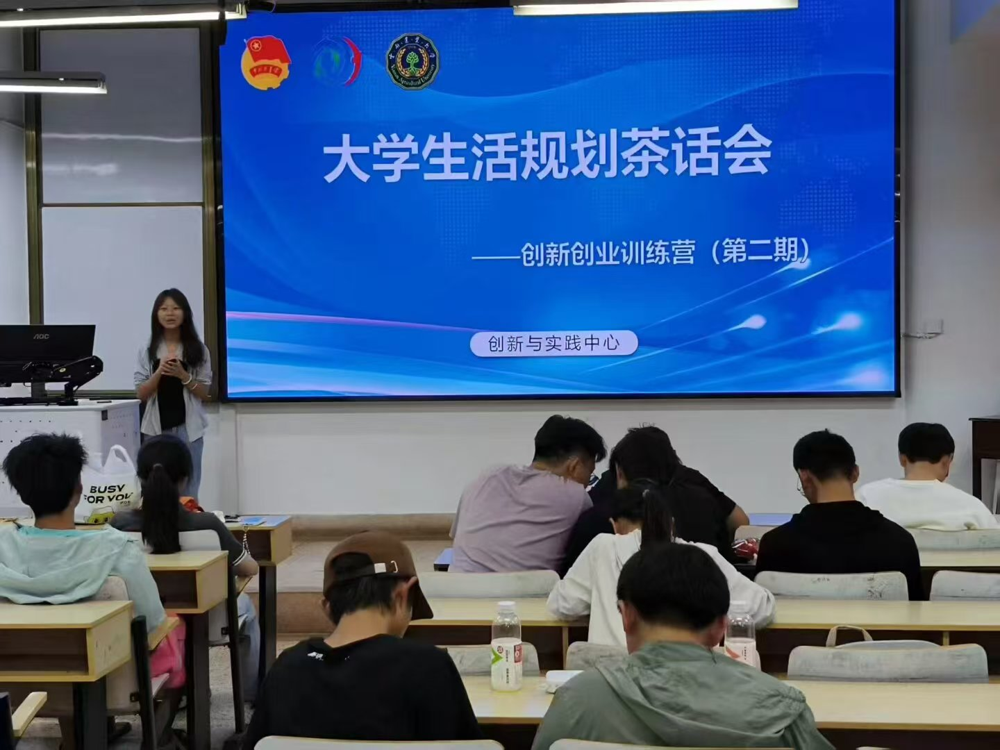
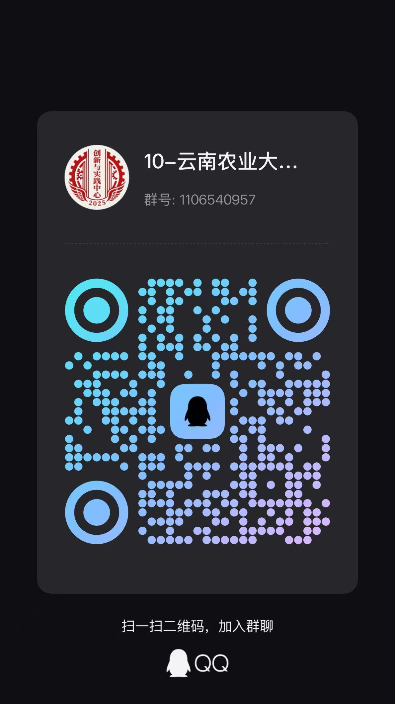

办公室
负责部门内部活动策划，宣传及外部协调等工作，包括新闻稿及宣传物料的撰写、美化。
统筹YNAU INNOVATION & PRACTICE
CENTER · 挑战杯 · 双创先锋营
以赛促创，以践赋能，
培育科创素养与就业竞争力
我们是谁
本社团由校团委指导，是校级重点学生实践组织，以培育学生科创实践能力、助力双创发展为宗旨，搭建竞赛、科研互助服务平台。
社团协助承办"挑战杯"等A类学科竞赛、双创先锋营、三下乡社会实践、西部计划等校级重点工作。下设办公室、赛事运营、就业实践三大部门，培养成员赛事统筹、宣传、社会实践等综合能力。
社团打通校内资源壁垒，依托竞赛实践赋能学生，持续完善科创与就业服务体系，全面提升学生科创素养与就业竞争力。
组织架构
负责部门内部活动策划，宣传及外部协调等工作，包括新闻稿及宣传物料的撰写、美化。
统筹负责组织学校"三下乡"等社会实践的组织，同时负责"就业引航""百校千企万岗""团团微就业"。
实践主要负责"挑战杯"赛事组织、项目资料整理、参赛团队管理等；负责"创新创业先锋营"的日常运行。
赛事活动剪影
从生涯规划座谈到普法知识竞赛，
从双创政策宣讲到大赛志愿服务，记录成长点滴。
品牌项目
 01
01法治学习社面向全校学生开展线上线下法治答题活动。线下设校园宣传答题点，线上开放答题渠道，表彰答题优秀同学。活动创新普法形式，以答促学，帮助学生巩固法律知识，提升法治素养与风险防范意识。
普法 · 以答促学
02本次创新创业训练营宣讲会面向在校学生开展，现场讲解训练营报名细则、创新创业赛事参赛要点。通过案例答疑解惑，帮助学生明晰双创发展路径，调动大家参与科创实践、创业锻炼的积极性。
双创 · 科创实践
03本次面向同学们开展生活规划茶话会，围绕学业安排、时间管理、职业方向展开交流。以轻松座谈形式答疑疏导，帮助学生梳理大学发展规划，缓解学业焦虑，提升自我规划与实践执行能力。
规划 · 成长赋能本次活动依托社团嘉年华开展民族服饰识别互动，以服饰展示，增进同学们对多民族文化的了解，厚植民族团结意识。
文化 · 民族团结未来方向
持续协助承办"挑战杯"等A类学科竞赛，搭建竞赛、科研互助服务平台，以赛促学、以赛促创。
运营"创新创业先锋营"，完善双创服务体系，帮助学生明晰双创发展路径，调动科创实践积极性。
组织"三下乡"社会实践、西部计划等校级重点工作，培养成员赛事统筹、宣传、社会实践等综合能力。
依托"就业引航""百校千企万岗""团团微就业"，持续完善科创与就业服务体系，提升学生就业竞争力。
